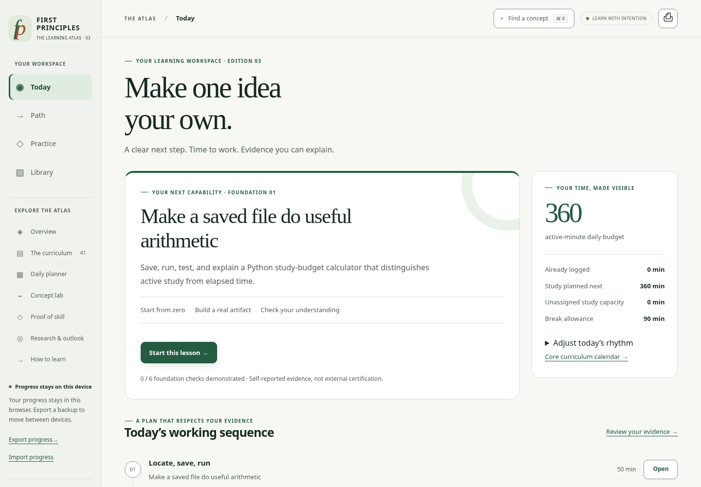

<!doctype html>
<html lang="en">
<meta charset="utf-8">
<meta name="viewport" content="width=1200">
<title>First Principles social preview source</title>
<style>
*{box-sizing:border-box}body{margin:0;width:1200px;height:630px;overflow:hidden;background:#f7f8f3;color:#172c24;font-family:Arial,sans-serif}.card{position:relative;height:630px;padding:55px 58px;border-top:10px solid #245d45}.brand{display:flex;gap:14px;align-items:center;font-size:15px;font-weight:700;letter-spacing:2px}.mark{font:italic 42px Georgia,serif;letter-spacing:-8px;background:#e6ecdd;border:1px solid #d4dfca;border-radius:13px;padding:0 17px 5px 10px;color:#245d45}.edition{position:absolute;top:60px;right:58px;color:#556b5c;font-size:12px;letter-spacing:2px}.copy{width:510px;position:relative;z-index:2}h1{font:normal 68px/1.06 Georgia,serif;letter-spacing:-2.5px;margin:45px 0 22px}h1 em{font-weight:normal;color:#245d45}p{font-size:20px;line-height:1.55;color:#4c6155;width:420px;margin:0}.facts{margin-top:35px;padding-top:23px;border-top:1px solid #ced9cc;display:flex;gap:28px;width:430px}.facts strong{font:normal 30px Georgia,serif;display:block;color:#1e4936}.facts span{font-size:11px;letter-spacing:1px;text-transform:uppercase;line-height:1.6}.browser{position:absolute;width:625px;left:598px;top:158px;border:1px solid #ccd9ca;border-radius:13px;background:white;overflow:hidden;box-shadow:0 22px 65px #163b271a;transform:rotate(-3deg)}.chrome{padding:12px 14px;border-bottom:1px solid #dce3d9;background:#edf2e8;color:#627361;font-size:11px;letter-spacing:.6px}.dots{color:#a0b39b;padding-right:14px}.browser img{display:block;width:625px;height:auto}.footer{position:absolute;bottom:32px;left:58px;font-size:12px;letter-spacing:1.4px;color:#536c59}.accent{position:absolute;right:-150px;top:140px;width:690px;height:690px;border-radius:50%;background:#e4ecd9}
</style>
<main class="card">
 <div class="accent"></div>
 <div class="brand"><span class="mark">fp</span> FIRST PRINCIPLES</div>
 <div class="edition">THE LEARNING ATLAS · 03</div>
 <div class="copy"><h1>Your path into<br><em>AI &amp; ML.</em></h1><p>Start from zero. Build understanding.<br>Keep your roadmap in one HTML file.</p>
 <div class="facts"><div><strong>6</strong><span>Guided days</span></div><div><strong>41</strong><span>Modules</span></div><div><strong>5</strong><span>Career routes</span></div></div></div>
 <div class="browser"><div class="chrome"><span class="dots">● ● ●</span> YOUR DAILY LEARNING WORKSPACE</div></div>
 <div class="footer">NO ACCOUNT · LOCAL PROGRESS · PORTABLE BY DESIGN</div>
</main>
</html>
